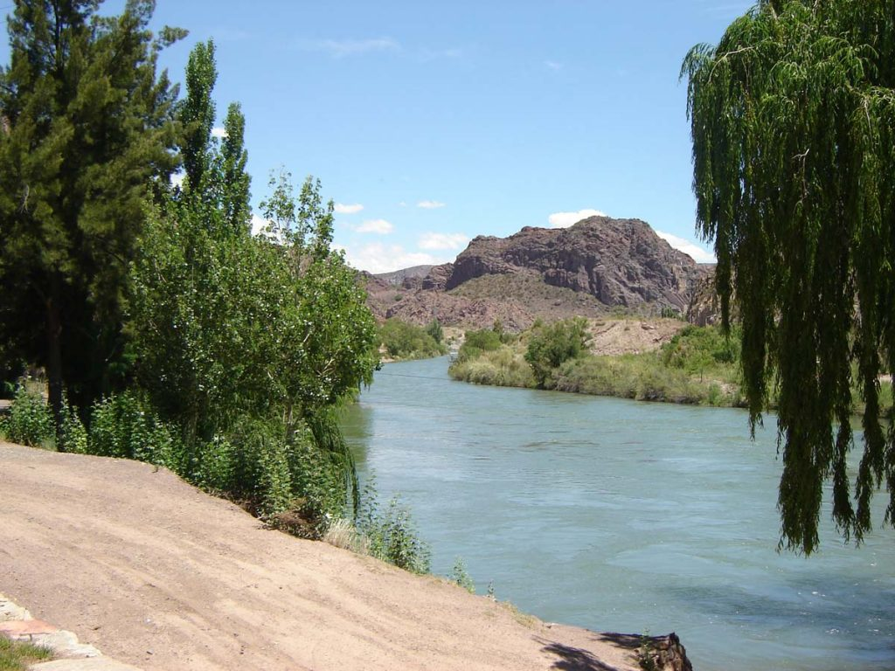
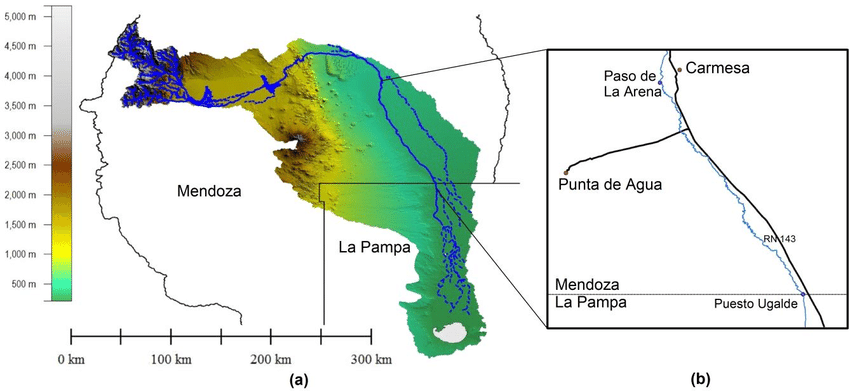
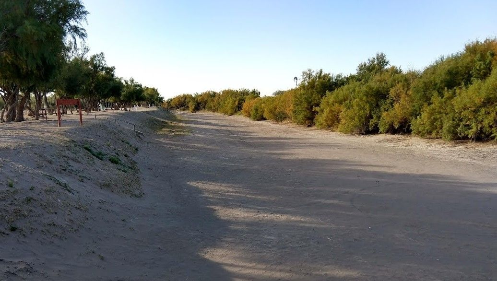
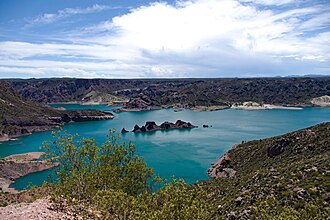

1. Contexto Histórico y Social
El conflicto por el uso del agua del Río Atuel entre Mendoza y La Pampa tiene sus raíces a comienzos del siglo XX, cuando las transformaciones productivas del país empezaron a intensificar la demanda de recursos hídricos. El Atuel nace en la cordillera de los Andes, atraviesa Mendoza y debería continuar su curso natural hacia el noroeste de La Pampa. Sin embargo, los proyectos de irrigación mendocinos desviaron progresivamente gran parte del caudal, dejando amplias zonas pampeanas sin acceso al agua.
Históricamente, el río era fuente de vida y desarrollo para ambas provincias: posibilitaba la agricultura, la ganadería y el asentamiento de comunidades rurales e indígenas, especialmente en el oeste pampeano. Con el avance de la frontera agrícola en Mendoza durante la primera mitad del siglo XX, el Estado provincial priorizó obras hidráulicas, como los diques Nihuiles, para sostener el crecimiento de la producción vitivinícola y hortícola. Este proceso consolidó una desigual distribución del agua entre ambas provincias.
El conflicto, entonces, no solo se explica por razones naturales o técnicas, sino también por una disputa social y territorial. Mientras Mendoza buscaba consolidar un modelo de desarrollo regional basado en el aprovechamiento intensivo del río, La Pampa reclamaba un uso equitativo y sustentable. A lo largo del tiempo, las relaciones sociales y políticas entre ambas provincias fluctuaron entre intentos de negociación y largos períodos de enfrentamiento judicial y político.
Los actores sociales también desempeñaron un papel crucial. Las comunidades locales pampeanas, agricultores y organizaciones ambientales comenzaron a movilizarse denunciando el "robo del río", visibilizando las consecuencias del desvío de agua. En tanto, sectores mendocinos defendían el aprovechamiento económico del recurso como motor del desarrollo regional. Este conflicto, que combina historia, territorio y poder, sigue siendo un reflejo de la desigualdad en la apropiación de los bienes naturales en Argentina.
2. Aspectos Legales y Políticos
El conflicto legal por el Río Atuel se remonta a los años 1940, cuando La Pampa reclamó ante el Estado nacional por la reducción del caudal del río, consecuencia directa de las obras realizadas en Mendoza. En 1987, la Corte Suprema de Justicia reconoció la existencia de un "río interprovincial" y ordenó a ambas provincias acordar un uso compartido. Sin embargo, el fallo no logró resolver de manera definitiva la disputa, debido a la falta de cumplimiento efectivo y a la ausencia de un mecanismo de gestión coordinada.
El tratamiento del conflicto refleja las tensiones entre distintos modelos económicos a lo largo del tiempo. Durante el Modelo Agroexportador (MAE), la prioridad era el desarrollo agrícola orientado a la exportación, especialmente en regiones con ventajas productivas, como Mendoza. En esa etapa, el agua fue considerada un recurso instrumental al servicio de las elites agrarias y comerciales, sin un enfoque de equidad territorial ni de sostenibilidad ambiental.
Con el avance del Modelo de Sustitución de Importaciones (ISI) entre las décadas de 1930 y 1970, el Estado asumió un papel más activo en la planificación económica, pero el conflicto del Atuel continuó sin resolverse. La prioridad seguía siendo la industrialización y el crecimiento de los centros urbanos más dinámicos, lo que mantuvo relegadas a las regiones menos desarrolladas, como el oeste pampeano.
Finalmente, bajo el Neoliberalismo (NL), especialmente a partir de la década de 1990, la gestión del agua se vio influenciada por la lógica del mercado. Las políticas de privatización, descentralización y desregulación profundizaron las desigualdades en el acceso al recurso. Mendoza fortaleció su infraestructura hídrica y su modelo de producción intensiva, mientras que La Pampa quedó nuevamente marginada, con escasa inversión en compensación o reparación ambiental.
De este modo, el conflicto legal y político por el Atuel refleja cómo las decisiones económicas nacionales condicionaron históricamente el uso del territorio y de los bienes comunes. Mendoza defiende el uso histórico del agua para riego, mientras que La Pampa exige un caudal mínimo ecológico. Las decisiones judiciales han intentado equilibrar estos intereses.
3. Impactos Ambientales y Económicos
Los impactos del conflicto por el Río Atuel son múltiples y se manifiestan tanto en el ambiente como en la estructura económica y social de ambas provincias. En La Pampa, la falta de caudal provocó la desertificación progresiva del oeste provincial, la pérdida de biodiversidad, la degradación de los suelos y la desaparición de humedales. Antiguos campos productivos se transformaron en terrenos áridos, afectando la agricultura, la ganadería y la vida de las comunidades rurales.
Durante el Modelo Agroexportador (MAE), Mendoza se consolidó como una provincia agrícola moderna, gracias a su red de canales y obras de irrigación. La Pampa, en cambio, quedó excluida de ese desarrollo, iniciando un proceso de marginación territorial. El modelo favoreció el crecimiento económico mendocino, pero a costa de la sustentabilidad ecológica de la cuenca.
Con el Modelo de Sustitución de Importaciones (ISI), las políticas estatales impulsaron la industrialización, pero sin resolver la desigualdad hídrica. Mendoza utilizó el agua del Atuel para ampliar su matriz agroindustrial, mientras que La Pampa careció de los recursos para desarrollar infraestructura. El resultado fue una brecha creciente en los niveles de desarrollo económico entre ambas provincias.
En el Neoliberalismo (NL), la tendencia se profundizó. El avance de la agricultura intensiva, los monocultivos y la privatización del manejo del agua favorecieron a los sectores más competitivos y capitalizados, mientras las comunidades rurales pampeanas sufrieron despoblamiento, desempleo y pobreza. A nivel ambiental, los efectos fueron devastadores: pérdida de flora y fauna autóctona, aumento de la salinidad de los suelos y degradación de los ecosistemas acuáticos.
La disputa por el Atuel, vista en perspectiva, demuestra cómo los modelos económicos aplicados en Argentina generaron impactos desiguales sobre los territorios, reproduciendo relaciones de poder que benefician a ciertos sectores mientras excluyen a otros.
4. Perspectivas y Soluciones

Las perspectivas sobre el futuro del Río Atuel son diversas y dependen de los intereses económicos, políticos y ambientales de cada provincia. Mendoza busca mantener su estructura productiva basada en la agricultura intensiva y el uso eficiente del agua mediante obras hidráulicas, mientras que La Pampa reclama la restitución de un caudal permanente que permita la recuperación de su ecosistema y de su economía regional.
En términos de modelos económicos, la búsqueda de soluciones puede interpretarse como una síntesis de las lecciones dejadas por el pasado. El Modelo Agroexportador (MAE) demostró la importancia de la infraestructura productiva, pero ignoró la equidad territorial. El ISI promovió el desarrollo interno, aunque centralizó el poder en pocas regiones. El Neoliberalismo (NL), por su parte, evidenció que la desregulación y la mercantilización del agua profundizan los desequilibrios.
Por ello, las soluciones actuales deben orientarse hacia un modelo híbrido y sostenible: promover una gestión integral del recurso, basada en la cooperación interprovincial, la participación ciudadana y la justicia ambiental. Se han propuesto acuerdos de distribución equitativa, restauración ecológica de humedales, uso eficiente del agua en el riego mendocino y compensaciones económicas para La Pampa.
El cambio climático, además, agrava la problemática, ya que reduce la disponibilidad hídrica y aumenta la frecuencia de sequías. En este contexto, el caso del Río Atuel enseña la importancia de la planificación a largo plazo, de políticas federales coordinadas y de la educación ambiental como herramienta de concientización social.
5. Preguntas para Profundizar
Profundizar en el conflicto del Río Atuel implica comprenderlo no solo como una disputa entre provincias, sino como una expresión territorial de los modelos de desarrollo aplicados en la Argentina. Cada etapa económica del país configuró una manera distinta de entender y administrar el agua. Durante el MAE, el agua fue un recurso de producción concentrado en zonas privilegiadas; durante el ISI, un factor de apoyo al crecimiento industrial, y bajo el NL, un bien sujeto a la lógica del mercado y la rentabilidad.
El cambio climático agrega un nuevo desafío: el derretimiento de glaciares andinos, la disminución de nevadas y la irregularidad de lluvias reducen el caudal del Atuel, agravando la competencia por el recurso. Esto obliga a repensar los modelos productivos y a adoptar políticas hídricas basadas en la sostenibilidad, la equidad y la ciencia.
Asimismo, los medios de comunicación y las redes sociales han desempeñado un papel fundamental en la construcción de narrativas. Mientras Mendoza suele presentar el conflicto como una defensa de su desarrollo económico, La Pampa lo visibiliza como una lucha por la justicia ambiental. Estas narrativas influyen en la opinión pública y condicionan las decisiones políticas.
Finalmente, la experiencia del Atuel puede compararse con otros casos internacionales, como la gestión del río Colorado (EE.UU.-México) o el Tajo-Segura (España), donde se implementaron sistemas de gestión compartida, monitoreo constante y participación ciudadana. Estos ejemplos muestran que la cooperación, la transparencia y el diálogo son claves para resolver disputas hídricas de manera sostenible y justa.